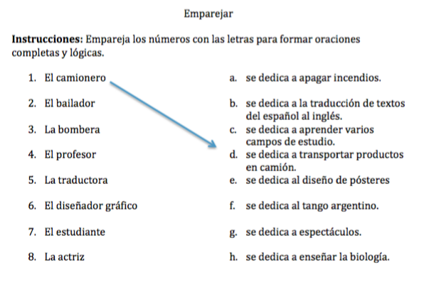
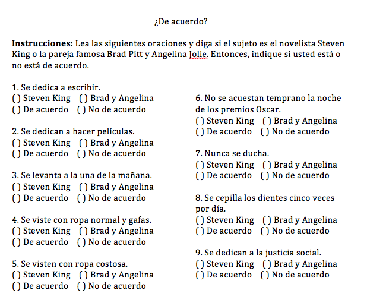

Matt Watson
SP 102 - The University of Alabama
01-22-16

Paso 1: Escriba a qué se dedican estas personas, según el modelo.
Modelo: Tomás está jubilado. Se dedica a cuidar de sus nietos.
Carolina es bailarina.
Javier es diseñador.
Margarita es camionera.
Ricardo es bombero.
Inés es maestra.
Paso 2: Compare sus respuestas con un compañero. Entonces, pregunte a su compañero quién más se dedica las actividades.
Modelo:
Estudiante 1: ¿Quién más se dedica a cuidar de sus nietos?
Estudiante 2: Mi abuelo, mi vecino, etc. … también se dedica a cuidar de sus nietos.

Paso 1: Elija la opción correcta para completar cada oración.
A. me dedico a la enseñanza. B. te dedicas a la pintura. C. nos dedicamos a apagar incendios. D. os dedicáis al arte. E. se dedica a bailar flamenco
Paso 2: Usando esta información, complete las siguientes oraciones con la profesión apropiada.
Instrucciones: Describa su rutina diaria a su compañero. Puede utilizar las listas del vocabulario de las páginas 164-165. Recuerda o escriba las respuestas de su compañero para compartir con la clase.
Modelo: Estudiante 1: ¿A qué hora te acuestas? Estudiante 2: Me acuesto tarde, a las 11, y me despierto temprano. Me visto en cinco minutos.
Otras pregunta posibles: ¿A qué hora te despiertas? ¿A qué te dedicas? ¿Qué estudias? ¿Por qué? ¿Tienes trabajo? ¿Te gusta? ¿Cuándo comes durante el día? ¿Tienes que conducir en coche mucho?